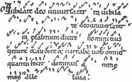

The Father of Music Education
Andrew OhGuido d'Arezzo, a visionary 11th-century Italian Benedictine monk, stands as one of the most influential figures in the history of music. His pioneering work revolutionized the way music was both composed and performed by inventing a system of music notation that allowed for the precise reading and interpretation of musical compositions. Guido's significant contributions began with the introduction of neumes, basic symbols placed above Latin texts in religious chants. These symbols provided early guidance on the rise and fall of pitch, marking an essential step towards creating a standardized method for musical notation.

Guido's most revolutionary achievement, however, was the development of the staff notation, which remains a cornerstone of music notation to this day. He created a system of four lines to which he assigned the syllables 'ut,' 're,' 'mi,' and 'fa.' These syllables, later evolved into 'do,' 're,' 'mi,' 'fa,' 'sol,' 'la,' and 'si' (the precursor to 'ti'), were utilized as a mnemonic aid for singers to remember pitches. Guido d'Arezzo's work was instrumental in enabling the precise recording of pitch and rhythm, providing musicians with the tools needed to notate and perform more intricate and expressive compositions.

This innovation profoundly impacted music education and the preservation of musical works, paving the way for the development of complex compositions across a wide array of musical genres and ensuring that the universal language of music could be shared and appreciated by future generations. Guido d'Arezzo's invention of music notation is the foundation of modern music theory and has shaped the way we learn and understand music today.